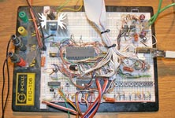
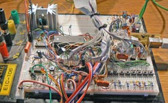
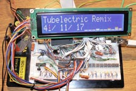

With new, well optimized MOD-player 3 it is possible to play multichannel trackers at reasonable sampling rates however there is one small problem. There are almost no multichannel trackers in ProTracker format (MOD). Conversion of S3M into MOD is very complicated and not always possible so I've decided to implement S3M loader for my player. ScreamTracker 3 is very similar to ProTracker so it wasn't to complicated but it has several problems. First one is that S3M uses unsigned samples while MOD uses signed. Coversion in realtime needs several more clock cycles in mix loop (some XOR and decision whether signed/unsigned) so this seems to be a bad solution. Preconversion to signed whould take at least 1s/1MB at 20MHz and I can't stand devices that hes response time longer than some 100ms so this is also wrong solution for me. :-) Therefore there left only last possibility: To make some program for PC that will preconvert S3M sample format. Since I had to make it this way it also converts S3M header into something between MOD and S3M. Resulting format is simple as MOD but has all advantages of S3M like compressed patterns, default panning, volume commands, etc.
|  |  |  |
{kind=link}
{kind=link}
{kind=link}
| Mixing: | 16-bit mono/stereo |
| Sampling rate: | 4 - 48kHz (maybe more) |
| Resampling: | none or linear interpolation |
| Max. channels: | 4 at 35kHz sampling rate |
| 8 at 21kHz sampling rate | |
| 10 at 17kHz sampling rate | |
| Data source: | HDD or CF card with FAT16 (basic folder support) |
| or serial port | |
| Formats: | Uncompressed ProTracker (*.MOD) Preconverted ScreamTracker 3 (*.S3M) |
All values are for AVR at 20MHz but it's of course possible to overclock.
It's almos identical to previous MOD-player 3. Only difference is that I had to make digital stereo mix instead of analog (because of panning effect) so I've removed mixing resistors from OPAMP outputs.
 |
Core of this player is relatively powerfull MCU AVR ATmega644-PU at 20MHz.
It has 64kiB of FLASH and 4kiB of RAM which is quite enough for all structures and some audio FIFO.
External SRAM is addressed in SW mode using two address buffers IC2 and IC3. It's using only two ports and
few control signals. SRAM should be at least 55ns version.
Same ports are shared with IDE interface in 16-bit mode, with HD44780 LCD in 8-bit mode and with buttons interface.
Audio output is same as in last version with I2S-like serial DAC connected at SPI interface.
More information how to handle it with AVR can be found
here
(but only in czech right now).
Used MCU should work at least at 20MHz but while experimenting with mutlichannel trackers I've tried to push it up a bit. At first only for 24MHz but since it seemed to work I've tried 27MHz and still no problem. This is quite interesting because my old ATmega32 had problems even at 18MHz (code worked only if it was aligned from even address :D). Because I haven't found any faster crystal I've tried to use some 32MHz oscillator from table sediments and after few aditional wait cycles for SRAM and IDE interface it works with no problems! It actually worked at 40MHz @ 6V1 but that was a bit much for other components. ;-)
Code it written in pure ASM but this time I've used louds of macros and I've
tried to make comments everywhere. I've also split the code from 7k+ lines long "noodle" into
several modules so it should be easier to undestand it.
Song can be loaded via serial interface without flow control of from FAT16
formated HDD or CF card with one level of folders (short file names only supported).
Only first 255 folders and 255 files from each folder can be selected but
I think it's more than enough.
Source and binary for TDA1543,
source and binary for TDA1545.
At first external SRAM is tested. If there is at least 64kiB program should continue.
If no SRAM is found or there is error detected program should stop.
Next step is detection of IDE device. If something is found and first partition is formated as FAT16
player should enter into folder menu.
If no IDE device is detected or IDE interface is disabled and player should enter into serial port loading mode.
In this mode player waits for MOD data that can be send by any terminal without flow control
(MCU is fast enough). End of file is detected automatically - file loading is finished if there
is no recieved byte for more than 1.5sec. Serial load can be also activated manually with "COM" button.
Other button functions in different modes should be obvious from the scheme.
Most of usefull options are present at beggining of "m644_modplay.asm" module.
Parameters are described in following table.
| Parameter | Meaning |
|---|---|
| XTAL | Crystal frequency [Hz] |
| HCOC | Adds aditional wait-cycle for external SRAM routines (usually necessary for XTAL>24MHz) |
| USRDIV | Clock divider for USART, baud=XTAL/(16*(USRDIV+1)) |
| MEMTST | Enables full SRAM test (it will take 1s/1MB/20MHz), usefull for easy SRAM functionality test |
| STORA | Enables IDE interface |
| LCDON | Enables LCD interface |
| LING | LCD texts language. |
| MAXCH | Max supported tracker channels count from 4 to 32 (default 16), it will take lot of aditional RAM if you set higher value |
| MAXINS | Max supported tracker instruments count, usually 48 but can be changed to both lower and higher value |
| DAC | DAC interface type, 1543=I2S, 1545=TDA1545 |
| SRATE | Desired sampling rate (from 4 up to 48kHz, maybe more) |
| STEREO | Enables stereo mixing |
| LINRES | Enables linear interpolation mixing (needs some more MCU power) |
| MAMPLD | Sets channel mix amplitude to max (only 4 channels) or half for multichannel trackers |
| DRAWVU | Enables VU-meters (needs some 5% MCU power) |
There are some more parameters in this module but it's usually not neccessary to change them. Only important parameter is audio FIFO size which should be always maximal (it should use entire unused RAM) but it can't be shorter than 1kiB because it's shared with another module as data buffer ("storage.asm").
If player is used with crystal CKOPT fuse should be programmed (full swing oscilator amplitude). JTAG should be disabled because it's located at data pins which are therefore in weak-high level mode. This is a bit problematic for fast data transfers. Another solution could be use of external pull-ups but I've didn't tried that.
Player should be able to play uncompressed ProTracker files (*.MOD) theoretically with
any channel count but of course with adequate sampling rate.
It is also able to play preconverted ScreamTracker 3 (S3M). For this conversion I've made simple program
called "S3M_2_MD3_convertor". It should be able to open any S3M and if it has supported format it should write
resulting file in my own format called ModTracker3 (MD3). Main covnersion utility is console application of course
but I've made simple GUI for it that allows simple conversion of multiple files at once.
Conversion utility download: S3M_2_MD3_convertor.zip (462kB).
| Supported MOD effects | ||
|---|---|---|
| # | Effect name | Implementation |
| 0 | Arpeggio | full support |
| 1 | Portamento up | full support |
| 2 | Portamento down | full support |
| 3 | Tone-portamento | full support |
| 4 | Vibrato | supported, only sine waveform |
| 5 | Tone-portamneto + Volume slide | full support |
| 6 | Vibrato + Volume slide | full support |
| 7 | Tremolo | full support |
| 8 | Panning (stereováha) | full support |
| 9 | Nastevení ofsetu vzorku | full support |
| A | Volume slide | full support |
| B | Skok na jiný list | only forward |
| C | Nastav hlasitost | full support |
| D | Skok v listu | full support |
| E0 | Nastav filtr | no |
| E1 | Portamento up jemnì | full support |
| E2 | Portamento down jemnì | full support |
| E3 | Glissandro | no - it's not used anywhere |
| E4 | Vibrato waveform | no - always sine |
| E5 | Fine-tune | no |
| E6 | Pattern loop | no |
| E7 | Tremolo waveform | no - always sine |
| E9 | Retrig note | full support |
| EA | Volume slide up jemnì | full support |
| EB | Volume slide down jemnì | full support |
| EC | Cut note | full support |
| ED | Note delay | full support |
| EE | Pattern delay | no |
| EF | Invert loop | no |
| F | Set speed/tempo | full support |
| Supported S3M effects | ||
|---|---|---|
| # | Effect name | Implementation |
| A | Set speed | full support |
| B | Position jump | only forward |
| C | Pattern break | full support |
| D | Volume slide/td> | full support |
| E | Portamento down | supported, extra-fine just partially |
| F | Portamento up | supported, extra-fine just partially |
| G | Tone-portamento | full support |
| H | Vibrato | full support |
| I | Tremor | no |
| J | Arpeggio | full support |
| K | Vibrato + volume slide | full support |
| L | Tone-portamento + volume slide | full support |
| M | Set channel volume | no |
| N | Channel volume slide | no |
| O | Set sample offset | full support |
| P | Panning slide | no |
| Q | Retrigger | full support |
| R | Tremolo | full support |
| S1 | Glissando | no |
| S2 | Set fine-tune | no |
| S3 | Set vibrato waveform | no (only sine) |
| S4 | Set tremolo waveform | no (only sine) |
| S5 | Set panbrello waveform | no |
| S6 | Pattern delay | no |
| S7 | Set new note action | no |
| S8 | Panning | full support |
| S9 | Extended channel effects | no |
| SA | Set sample offset high | no |
| SB | Pattern loop | no |
| SC | Note cut | full support |
| SD | Note delay | full support |
| SE | Pattern delay | no |
| SF | Select active macro | no |
| T | Set tempo | full support |
| U | Fine vibrato | full support |
| V | Set global volume | no |
| W | Global volume slide | no |
| X | Set panning | full support |
| Y | Panbrello | no |
Implemented effects should sound exactly as in Modplug tracker - I've used it and its sources almost
as a standard. ;-)
If you'll find any MOD that sounds differently than it should send it to me - I'll try to fix my code.
Last version of my MOD player was designed without detailed documentation so result was terrible
but this time I've fortunately found some good specifications:
| File | Description |
|---|---|
| FH-MFDL2.ZIP | Original documentation, simple description for most of tracker formats |
| MOD-FORM.TXT | Detailed specification from some mid2mod utility |
| MODFILXX.TXT | Detailed specification from MOD player TNT MP11 |
The best "documentation" of all is Modplug tracker source code. Main decoder is taken from some ancient player (and converted into C++) so it actually verty nasty but still it's the best way how to understand how effects works.
In this video there are some S3M trackers played (it's mostly from Jazz Jack Rabbit 2 game):
| Last update: 23.10.2011 |